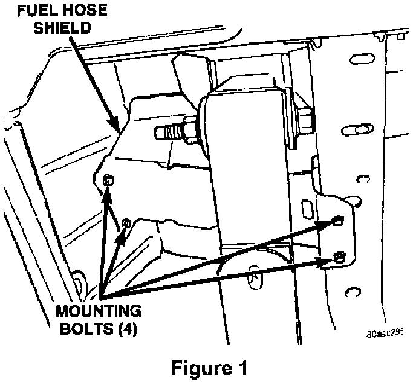
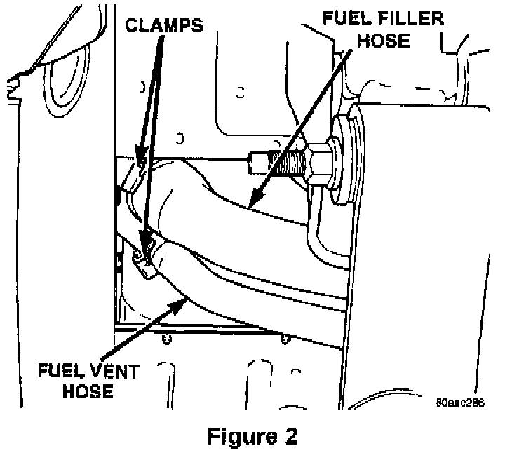
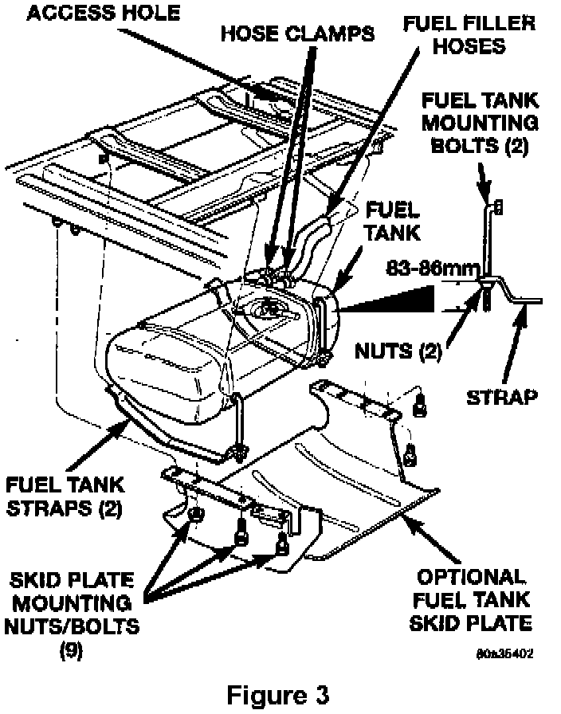
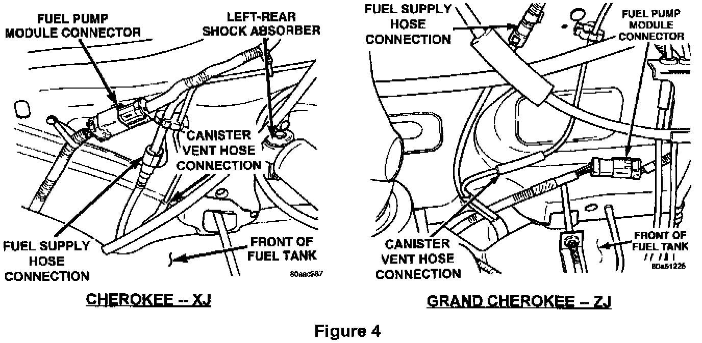
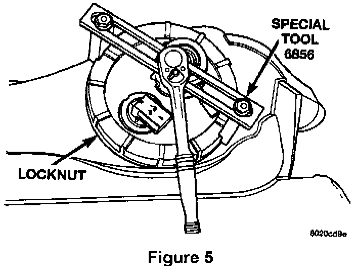
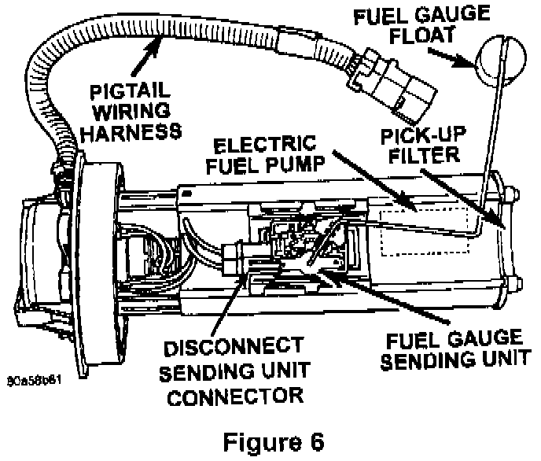
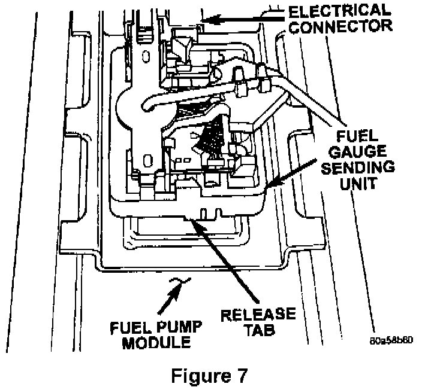
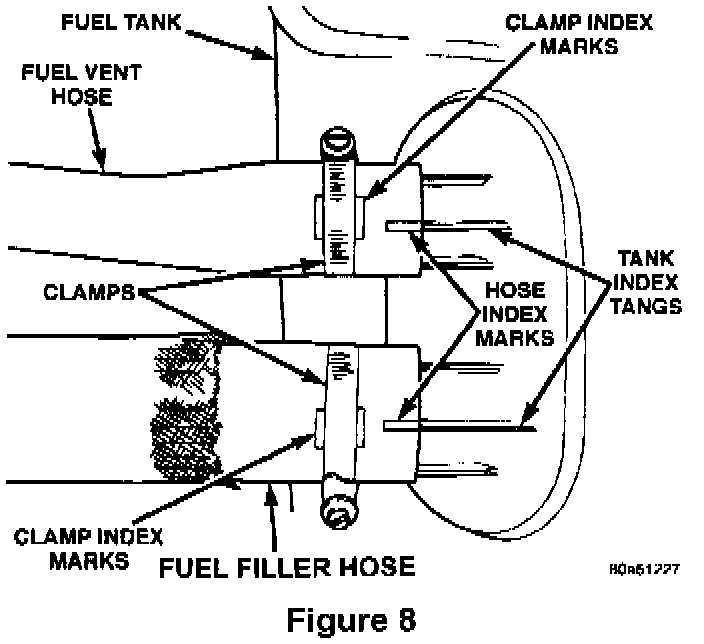

Service Procedure For Cherokee/Grand Cherokee (XJ/Zj) Vehicles
WARNING:The fuel system is under constant fuel pressure even with the engine off. Fuel pressure must be released before servicing the fuel tank.
1. With the ignition key in the OFF position, disconnect the battery.
Note:
To enhance customer satisfaction, remember to record all radio settings before disconnecting the battery and to reset all electronic memory (clock, radio settings, etc.) when you have completed the service procedure.
2. Remove the fuel tank filler cap to release the fuel tank pressure.
3. Remove the protective cap from the pressure test port on the fuel rail.
WARNING:
Do not allow fuel to spill onto the engine intake or exhaust manifolds. Place shop towels under and around the pressure port to absorb fuel when pressure is released from the rail.
4. Obtain the hose from the fuel pressure gauge tool set # 5069. Position one end of the hose into an approved gasoline container, then attach the hose to the fuel rail test port to release the fuel pressure.
5. Remove the hose from the fuel rail and reinstall the test port cap.
6. Raise the vehicle on an appropriate hoist.

7. For XJ vehicles only: Remove the fuel hose shield (Figure 1).

8. Remove the fuel tank filler hose and vent hose clamps at the fuel tank filler tube (Figure 2). Remove both hoses from the filler tube.
9. Drain the fuel tank by inserting a 1/4 I.D. fuel hose through the vent hose. Attach the other end of the hose to an approved gasoline storage container and then drain the tank until empty.

10. Remove the fuel tank skid plate trailer hitch and/or tow hooks (if equipped) (Figure 3).
NOTE:
Trailer hitch and tow hook removal is required only if the vehicle has a skid plate.
11. Remove the tailpipe heat shield.

12. Disconnect the fuel supply hose near the front of the fuel tank (Figure 4).
13. Disconnect the vapor canister vent hose near the front of the fuel tank (Figure 4).
14. Disconnect the fuel pump module electrical connector near the front of the fuel tank (Figure 4).
15. Place a hydraulic jack under the fuel tank.
16. Remove the two (2) fuel tank strap nuts and position the straps away from the tank (Figure 3).
17. Lower the fuel tank slightly to access the fuel filler and vent hoses.
18. Remove the fuel filler and vent hoses from the fuel tank (Figure 3).
19. Continue lowering the fuel tank and then place the fuel tank on the floor.
20. Throughly wash and clean the area around the fuel pump module to prevent contaminants from entering the tank.

21. Remove the fuel pump module locknut using Miller Special Tool # 6856 (Figure 5).
NOTE:
The fuel pump module will spring up when the locknut is removed.
22. Remove the fuel pump module from the fuel tank.
23. Remove and discard the fuel pump module gasket.

24. Disconnect the sending unit electrical connector (Figure 6).

25. Press the release tab and remove the sending unit from the fuel pump module (Figure 7). Discard the sending unit.
26. Install the new fuel gauge sending unit onto the fuel pump module (Figure 7).
27. Connect the sending unit electrical connector (Figure 6).
28. Install the provided fuel pump module gasket onto the fuel tank.
29. Position the fuel pump module into the fuel tank opening.
30. Loosely install the fuel pump module locknut.
31. Rotate the fuel pump module until the arrow is pointed toward the front of the vehicle (12 o'clock position).
NOTE:
Make sure that the pump module is properly positioned or the fuel gauge float may bind.
32. Tighten the locknut to 55 ft-lbs (75 N.m) using Special Tool # 6856 (Figure 5).
33. Rotate the fuel filter/fuel pressure regulator until its fitting is pointed to the 11 o'clock position (if necessary).
34. Position the fuel tank on the hydraulic jack.
35. Raise the tank into position.

36. Attach the fuel filler and vent hoses to the fuel tank. Make sure that the hose index marks are aligned with the tank index tangs (Figure 8). Tighten the hose clamps to 27 in-lbs (3 N.m).
37. Attach the two (2) fuel tank mounting straps and mounting nuts (Figure 3).
^ For ZJ vehicles: Tighten the two mounting nuts until the nut is 3-1/4 - 3-7/16 in (83-86 mm) from the end of the mounting bolts (Figure 3). Do not over tighten.
^ For XJ vehicles: Tighten the fuel tank strap nuts to 90 in-lbs (10 N.m). Do not over tighten.
38. Install the fuel filler and vent hoses onto the fuel filler tube (Figure 2). Tighten the hose clamps to 27 in-lbs (3 N.m).
39. Connect the fuel pump module electrical connector (Figure 4).
40. Connect the fuel supply hose (Figure 4).
41. Connect the vapor canister vent hose (Figure 4).
42. Install the exhaust tailpipe heat shield.
43. Install the fuel tank skid plate trailer hitch and/or tow hooks (if equipped).
44. For XJ vehicles: Install the fuel hose shield (Figure 1).
45. Lower the vehicle.
46. Refill the fuel tank and install the fuel filler cap.
47. Reconnect the negative battery terminal.